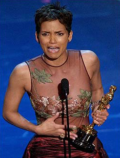

Monster's Ball (2001)
zondag 16 januari 2005 | 4 sterren
Klassiek verhaal (onmogelijke liefde) in een vrij rauwe verpakking: het komt erop neer dat een vrouw, wiens man ter dood veroordeeld werd, verliefd wordt op de cipier die hem naar de elektrische stoel leidde. Maar er is meer dan dat: je ziet twee mensen die — om verschillende redenen — breken met een onmetelijk zwaar verleden. Doen ze dat niet, dan gaan ze ten onder. Heel mooi hoe ze op het einde van de film berusten in hun nieuwe lot.
De film heeft me erg aangegrepen, wat ik eerlijk gezegd niet had zien aankomen. Ik dacht dat het hier om één of andere Hollywood nobrainer ging. Fantastische acteerprestatie van Billy Bob Thornton: ik begin die kerel meer en meer te appreciëren. Oh ja, en Halle Berry is een schone madam, ook in haar blootje.
IMDB: Monster's Ball (2001)
